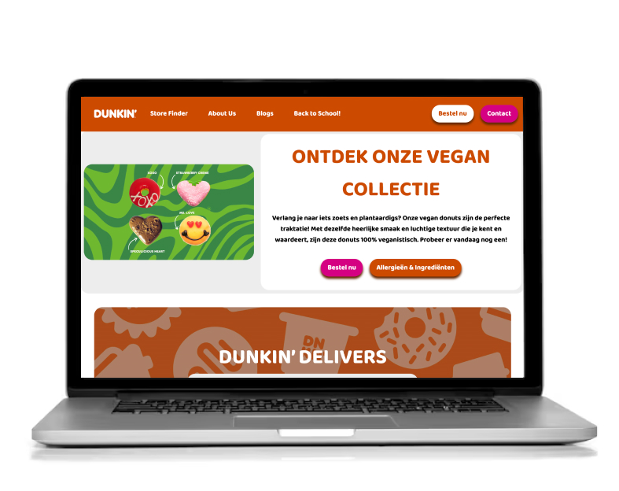
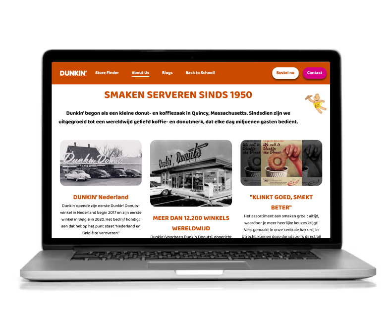

Dunkin’ Responsive Website Redesign
Frontend Development
View prototype ↗About this project
For the course Frontend Development, I redesigned and rebuilt the Dunkin’ website with a strong focus on responsive design. The goal was to make the pages fully adaptable from mobile screen size up to laptop screens, improving the structure and usability of the original site.
I created two pages: a Home page and an About Us page, and developed them using HTML, CSS, and basic JavaScrip. One of the biggest challenges was that I was instructed to use no classes or as few as possible, which pushed me to write clean semantic HTML and rely on element-based styling.
During this project I also experimented with:
- Dark mode
- High contrast mode
- A hamburger menu built with JavaScript
- Small UI animations
Preview

